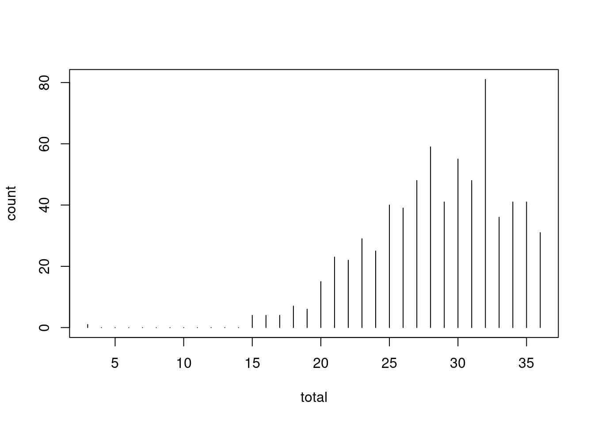
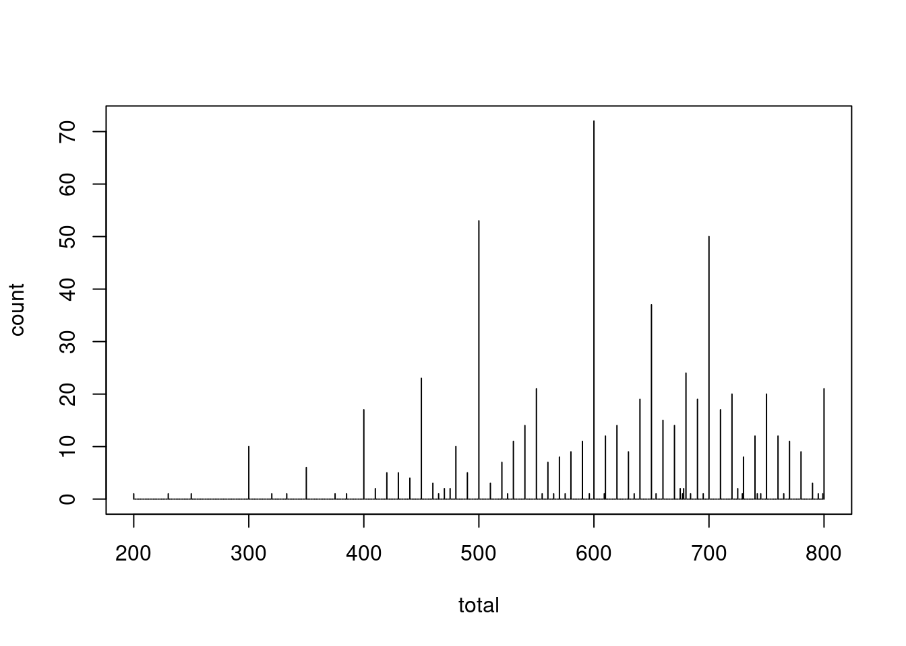
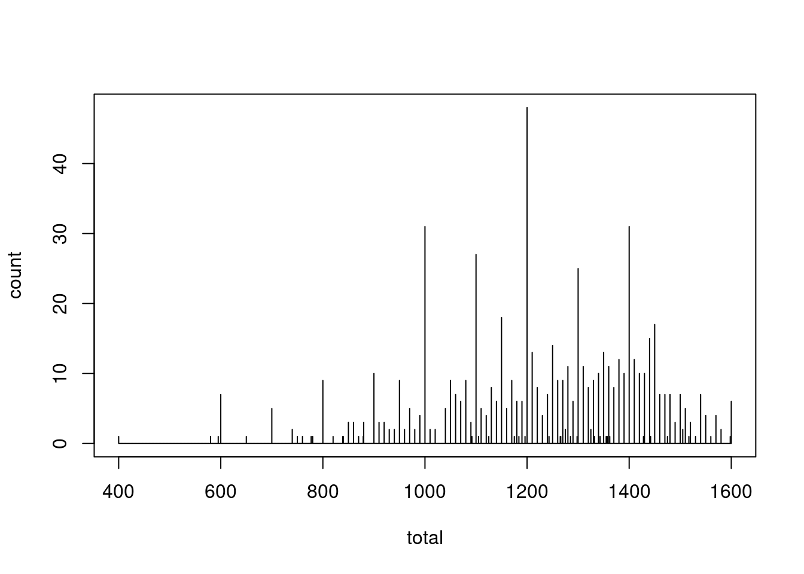
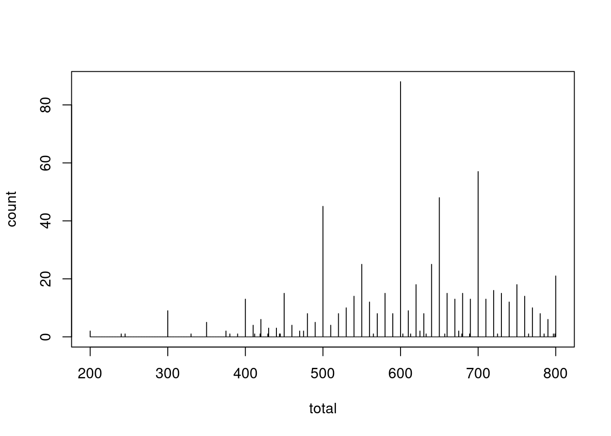
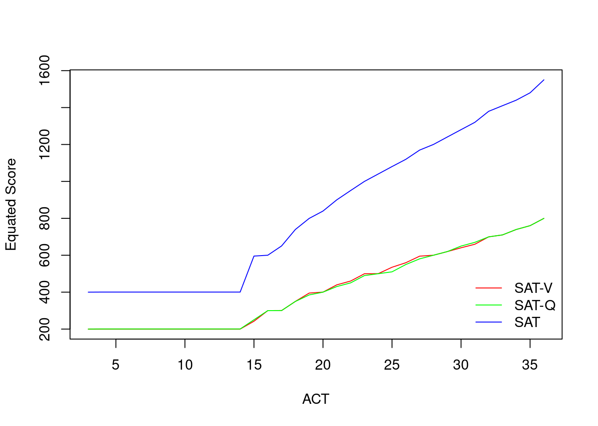
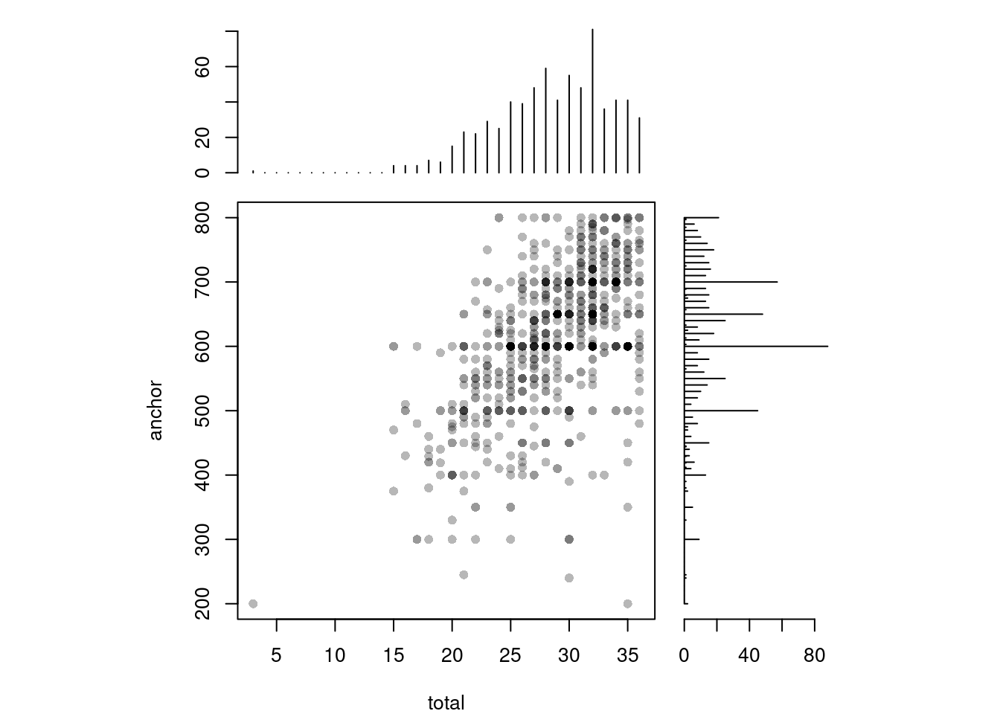
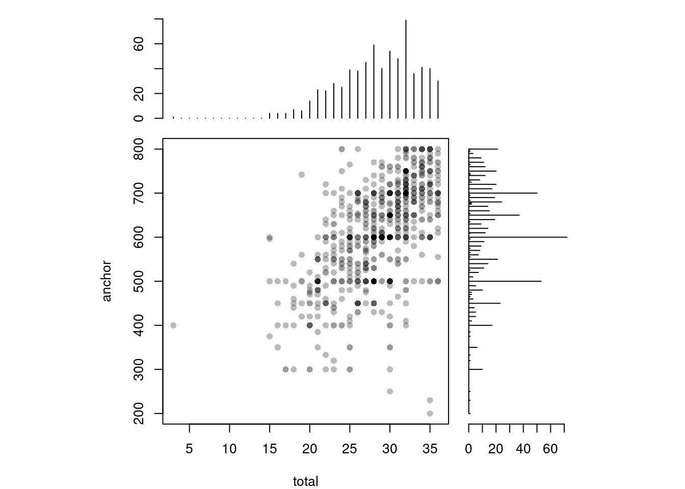
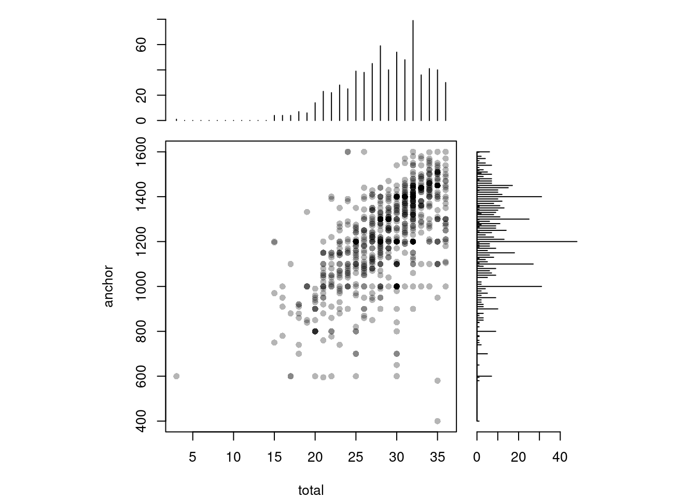
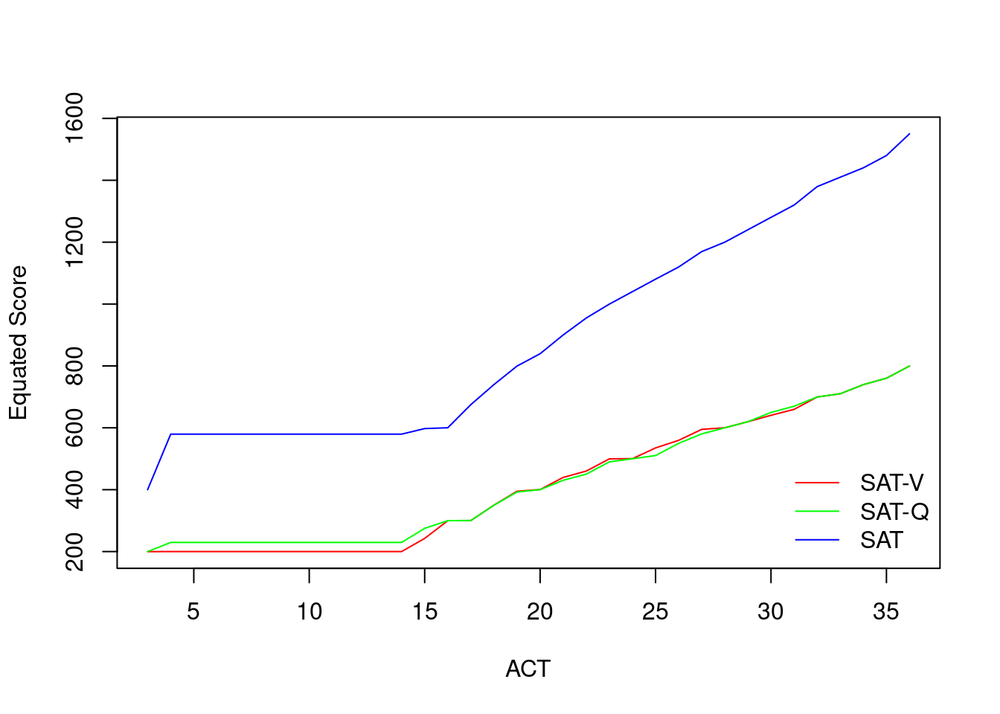

Code
library(equate)
library(gt)
#>
#> Attaching package: 'gt'
#> The following object is masked from 'package:equate':
#>
#> pxAugust 27, 2022
Something about equating. The {gt} package provides some great options for formatting clean tables.
The data we’ll be using is from the {psych} package.
data(sat.act, package = "psych")
str(sat.act)
#> 'data.frame': 700 obs. of 6 variables:
#> $ gender : int 2 2 2 1 1 1 2 1 2 2 ...
#> $ education: int 3 3 3 4 2 5 5 3 4 5 ...
#> $ age : int 19 23 20 27 33 26 30 19 23 40 ...
#> $ ACT : int 24 35 21 26 31 28 36 22 22 35 ...
#> $ SATV : int 500 600 480 550 600 640 610 520 400 730 ...
#> $ SATQ : int 500 500 470 520 550 640 500 560 600 800 ...f_build_sat_act_gt <- function(...) {
ls <- list(...)
ls <- lapply(ls, `[[`, "concordance")
for (i in seq_along(ls)[-1]) {
ls[[i]] <- ls[[i]][-1]
}
tab <- do.call(cbind, ls)
names(tab) <- c("act", "satv", "satv_se", "satq", "satq_se", "sat", "sat_se")
tab |>
fuj::flip() |>
gt::gt(NULL, "ACT") |>
gt::fmt_integer(c(act, satv, satq, sat)) |>
gt::fmt_number(tidyselect::ends_with("_se"), decimals = 2) |>
gt::cols_merge(c(satv, satv_se), pattern = "{1} ({2})") |>
gt::cols_merge(c(satq, satq_se), pattern = "{1} ({2})") |>
gt::cols_merge(c(sat, sat_se), pattern = "{1} ({2})") |>
gt::cols_label(act = "ACT", satv = "SAT-V", satq = "SAT-Q", sat = "SAT") |>
gt::tab_options()
}The anchors we’re using are the range of the scores in the current data set.
act_ft <- freqtab(sat.act$ACT, 3:36)
satv_ft <- freqtab(sat.act$SATV, 200:800)
satq_ft <- freqtab(sat.act$SATQ, 200:800)
sat_ft <- freqtab(sat.act$SATV + sat.act$SATQ, 400:1600)
eq_equiperc_eg <- function(x, y) {
equate::equate(x, y, type = "equipercentile", reps = 201)
}
eq_act_satv <- eq_equiperc_eg(act_ft, satv_ft)
eq_act_satq <- eq_equiperc_eg(act_ft, satq_ft)
eq_act_sat <- eq_equiperc_eg(act_ft, sat_ft)




Generate a concordance table. This table will allow us to match scores on the ACT to scores on the SAT.
| ACT | SAT-V | SAT-Q | SAT |
|---|---|---|---|
| 36 | 800 (0.24) | 800 (0.24) | 1,550 (1.34) |
| 35 | 760 (0.69) | 760 (0.79) | 1,480 (1.36) |
| 34 | 740 (1.05) | 740 (1.04) | 1,440 (0.83) |
| 33 | 710 (1.11) | 710 (0.84) | 1,410 (1.19) |
| 32 | 700 (0.29) | 700 (0.33) | 1,380 (1.36) |
| 31 | 660 (1.20) | 670 (1.26) | 1,320 (2.21) |
| 30 | 640 (0.74) | 650 (0.49) | 1,280 (1.66) |
| 29 | 620 (1.03) | 620 (1.31) | 1,240 (2.63) |
| 28 | 600 (0.20) | 600 (0.25) | 1,200 (0.37) |
| 27 | 595 (0.20) | 580 (1.95) | 1,170 (1.95) |
| 26 | 560 (1.41) | 550 (0.79) | 1,120 (4.16) |
| 25 | 535 (1.12) | 510 (5.16) | 1,080 (1.72) |
| 24 | 500 (0.31) | 500 (0.26) | 1,040 (2.84) |
| 23 | 500 (0.29) | 490 (2.58) | 1,000 (0.41) |
| 22 | 460 (2.89) | 450 (0.49) | 950 (1.27) |
| 21 | 440 (3.28) | 430 (1.94) | 900 (0.96) |
| 20 | 400 (0.60) | 400 (0.45) | 839 (7.87) |
| 19 | 395 (0.51) | 385 (6.56) | 800 (0.73) |
| 18 | 350 (1.11) | 350 (0.92) | 740 (2.79) |
| 17 | 300 (0.50) | 300 (0.44) | 650 (4.57) |
| 16 | 300 (0.38) | 300 (0.33) | 600 (0.49) |
| 15 | 242 (2.44) | 250 (2.40) | 595 (2.40) |
| 14 | 200 (0.61) | 200 (1.39) | 400 (1.39) |
| 13 | 200 (0.61) | 200 (1.39) | 400 (1.39) |
| 12 | 200 (0.61) | 200 (1.39) | 400 (1.39) |
| 11 | 200 (0.61) | 200 (1.39) | 400 (1.39) |
| 10 | 200 (0.61) | 200 (1.39) | 400 (1.39) |
| 9 | 200 (0.61) | 200 (1.39) | 400 (1.39) |
| 8 | 200 (0.61) | 200 (1.39) | 400 (1.39) |
| 7 | 200 (0.61) | 200 (1.39) | 400 (1.39) |
| 6 | 200 (0.61) | 200 (1.39) | 400 (1.39) |
| 5 | 200 (0.61) | 200 (1.39) | 400 (1.39) |
| 4 | 200 (0.61) | 200 (1.39) | 400 (1.39) |
| 3 | 200 (0.40) | 200 (0.85) | 400 (0.85) |
act_satv_ft <- freqtab(sat.act[, c("ACT", "SATV")], list(3:36, 200:800))
act_satq_ft <- freqtab(sat.act[, c("ACT", "SATQ")], list(3:36, 200:800))
act_sat_ft <- with(sat.act, freqtab(list(ACT, SATV + SATQ), list(3:36, 400:1600)))
eq_equiperc_sg <- function(x) {
equate::equate(x, type = "equipercentile", boot = TRUE, reps = 201)
}
eq_act_satv_sg <- eq_equiperc_sg(act_satv_ft)
eq_act_satq_sg <- eq_equiperc_sg(act_satq_ft)
eq_act_sat_sg <- eq_equiperc_sg(act_sat_ft)



We can construct the same concordance table as we did before. However, because we are using a single group design, we won’t be reporting any standard error values.
| ACT | SAT-V | SAT-Q | SAT |
|---|---|---|---|
| 36 | 800 (2.99) | 800 (3.67) | 1,550 (14.91) |
| 35 | 760 (8.02) | 760 (7.26) | 1,480 (14.31) |
| 34 | 740 (9.34) | 740 (9.93) | 1,440 (8.55) |
| 33 | 710 (8.82) | 710 (8.13) | 1,410 (11.47) |
| 32 | 700 (7.23) | 700 (6.43) | 1,380 (13.74) |
| 31 | 660 (9.40) | 670 (10.04) | 1,320 (15.29) |
| 30 | 640 (7.05) | 650 (7.68) | 1,280 (15.22) |
| 29 | 620 (12.40) | 620 (12.67) | 1,240 (20.73) |
| 28 | 600 (1.69) | 600 (2.54) | 1,200 (8.05) |
| 27 | 595 (11.39) | 580 (15.53) | 1,170 (19.87) |
| 26 | 560 (12.48) | 550 (12.78) | 1,120 (19.40) |
| 25 | 535 (15.39) | 510 (14.63) | 1,080 (17.55) |
| 24 | 500 (10.73) | 500 (3.93) | 1,040 (26.59) |
| 23 | 500 (10.92) | 490 (13.82) | 1,000 (14.00) |
| 22 | 460 (17.40) | 450 (13.01) | 955 (26.53) |
| 21 | 440 (16.29) | 430 (15.13) | 900 (28.92) |
| 20 | 400 (14.28) | 400 (13.68) | 840 (39.79) |
| 19 | 395 (26.21) | 392 (28.89) | 800 (47.49) |
| 18 | 350 (34.56) | 350 (33.15) | 740 (58.88) |
| 17 | 300 (29.76) | 300 (25.50) | 675 (61.24) |
| 16 | 300 (26.55) | 300 (22.02) | 600 (49.50) |
| 15 | 242 (37.70) | 275 (35.90) | 598 (58.99) |
| 14 | 200 (30.40) | 230 (33.69) | 580 (95.00) |
| 13 | 200 (30.40) | 230 (33.69) | 580 (95.00) |
| 12 | 200 (30.40) | 230 (33.69) | 580 (95.00) |
| 11 | 200 (30.40) | 230 (33.69) | 580 (95.00) |
| 10 | 200 (30.40) | 230 (33.69) | 580 (95.00) |
| 9 | 200 (30.40) | 230 (33.69) | 580 (95.00) |
| 8 | 200 (30.40) | 230 (33.69) | 580 (95.00) |
| 7 | 200 (30.40) | 230 (33.69) | 580 (95.00) |
| 6 | 200 (30.40) | 230 (33.69) | 580 (95.00) |
| 5 | 200 (30.40) | 230 (33.69) | 580 (95.00) |
| 4 | 200 (30.40) | 230 (33.69) | 580 (95.00) |
| 3 | 200 (22.85) | 200 (25.50) | 400 (90.14) |
---
title: Score equating
subtitle: With the `{equate}` package
date: "2022-08-27"
categories: ["R", "statistics"]
draft: true
---
Something about equating.
The `{gt}` package provides some great options for formatting clean tables.
```{r}
set.seed(20220827)
library(equate)
library(gt)
```
The data we'll be using is from the `{psych}` package.
```{r data}
data(sat.act, package = "psych")
str(sat.act)
```
```{r published-tables}
#| eval: false
#| include: false
#| echo: false
# math
ref_act_satq = data.frame(
ACT = c(36L,35L,34L,33L,32L,31L,30L,29L,28L,
27L,26L,25L,24L,23L,22L,21L,20L,19L,18L,17L,16L,
15L,14L,13L,12L,11L,10L),
SATQ = c(800L,780L,760L,740L,720L,710L,700L,
680L,660L,640L,610L,590L,580L,560L,540L,530L,520L,510L,
500L,470L,430L,400L,360L,330L,310L,280L,260L)
)
# reading
ref_act_satv <- data.frame(
ACT = c(72L,71L,70L,69L,68L,67L,66L,65L,64L,
63L,62L,61L,60L,59L,58L,57L,56L,55L,54L,53L,52L,
51L,50L,49L,48L,47L,46L,45L,44L,43L,42L,41L,40L,39L,
38L,37L,36L,35L,34L,33L,32L,31L,30L,29L,28L,27L,
26L,25L,24L,23L,22L,21L,20L,19L,18L,17L,16L,15L,14L),
SATV = c(790L,770L,750L,740L,730L,720L,710L,
700L,700L,690L,680L,680L,670L,660L,660L,650L,640L,640L,
630L,630L,620L,610L,610L,600L,590L,580L,580L,570L,
560L,550L,540L,540L,530L,520L,510L,500L,500L,490L,480L,
470L,460L,450L,440L,430L,420L,410L,400L,390L,380L,
370L,360L,350L,340L,330L,320L,310L,300L,290L,280L)
)
data.frame(
stringsAsFactors = FALSE,
check.names = FALSE,
ACT = c(36L,35L,34L,33L,32L,31L,
30L,29L,28L,27L,26L,25L,24L,23L,22L,21L,20L,19L,
18L,17L,16L,15L,14L,13L,12L,11L,10L,9L),
SATQ = c(1590L,1540L,1500L,1460L,
1430L,1400L,1370L,1340L,1310L,1280L,1240L,1210L,
1180L,1140L,1110L,1080L,1040L,1010L,970L,930L,890L,
850L,800L,760L,710L,670L,630L,590L),
`SAT Range` = c("1570-1600","1530-1560",
"1490-1520","1450-1480","1420-1440","1390-1410",
"1360-1380","1330-1350","1300-1320","1260-1290","1230-1250",
"1200-1220","1160-1190","1130-1150","1100-1120",
"1060-1090","1030-1050","990-1020","960-980","920-950",
"880-910","830-870","780-820","730-770","690-720",
"650-680","620–640","590–610")
)
```
```{r funs}
#| class-source: fold-hide
# TODO check if class-source works
f_build_sat_act_gt <- function(...) {
ls <- list(...)
ls <- lapply(ls, `[[`, "concordance")
for (i in seq_along(ls)[-1]) {
ls[[i]] <- ls[[i]][-1]
}
tab <- do.call(cbind, ls)
names(tab) <- c("act", "satv", "satv_se", "satq", "satq_se", "sat", "sat_se")
tab |>
fuj::flip() |>
gt::gt(NULL, "ACT") |>
gt::fmt_integer(c(act, satv, satq, sat)) |>
gt::fmt_number(tidyselect::ends_with("_se"), decimals = 2) |>
gt::cols_merge(c(satv, satv_se), pattern = "{1} ({2})") |>
gt::cols_merge(c(satq, satq_se), pattern = "{1} ({2})") |>
gt::cols_merge(c(sat, sat_se), pattern = "{1} ({2})") |>
gt::cols_label(act = "ACT", satv = "SAT-V", satq = "SAT-Q", sat = "SAT") |>
gt::tab_options()
}
```
<!-- TODO add information on published concordance tables. -->
<!-- https://www.act.org/content/dam/act/unsecured/documents/ACT-SAT-Concordance-Tables.pdf -->
<!-- Our results won't be exact but maybe close enough. -->
## Equivalent group design
The anchors we're using are the range of the scores in the current data set.
```{r eg-design}
act_ft <- freqtab(sat.act$ACT, 3:36)
satv_ft <- freqtab(sat.act$SATV, 200:800)
satq_ft <- freqtab(sat.act$SATQ, 200:800)
sat_ft <- freqtab(sat.act$SATV + sat.act$SATQ, 400:1600)
eq_equiperc_eg <- function(x, y) {
equate::equate(x, y, type = "equipercentile", reps = 201)
}
eq_act_satv <- eq_equiperc_eg(act_ft, satv_ft)
eq_act_satq <- eq_equiperc_eg(act_ft, satq_ft)
eq_act_sat <- eq_equiperc_eg(act_ft, sat_ft)
```
```{r eg-plot}
#| layout: [[1,1,1,1],[1]]
#| fig-align: center
#| column: screen-inset-shaded
plot(act_ft)
plot(satq_ft)
plot(sat_ft)
plot(satv_ft)
plot(
eq_act_satv,
eq_act_satq,
eq_act_sat,
legendtext = c("SAT-V", "SAT-Q", "SAT"),
xlab = "ACT",
addident = FALSE
)
```
Generate a concordance table.
This table will allow us to match scores on the ACT to scores on the SAT.
```{r eg-table}
#| column: screen-inset-shaded
f_build_sat_act_gt(eq_act_satv, eq_act_satq, eq_act_sat)
```
## Single group design
```{r sg-design}
act_satv_ft <- freqtab(sat.act[, c("ACT", "SATV")], list(3:36, 200:800))
act_satq_ft <- freqtab(sat.act[, c("ACT", "SATQ")], list(3:36, 200:800))
act_sat_ft <- with(sat.act, freqtab(list(ACT, SATV + SATQ), list(3:36, 400:1600)))
eq_equiperc_sg <- function(x) {
equate::equate(x, type = "equipercentile", boot = TRUE, reps = 201)
}
eq_act_satv_sg <- eq_equiperc_sg(act_satv_ft)
eq_act_satq_sg <- eq_equiperc_sg(act_satq_ft)
eq_act_sat_sg <- eq_equiperc_sg(act_sat_ft)
```
```{r sg-plot}
#| layout: [[1,1,1],[1]]
#| fig-align: center
#| column: screen-inset-shaded
plot(act_satv_ft)
plot(act_satq_ft)
plot(act_sat_ft)
plot(
eq_act_satv_sg,
eq_act_satq_sg,
eq_act_sat_sg,
legendtext = c("SAT-V", "SAT-Q", "SAT"),
xlab = "ACT",
addident = FALSE
)
```
We can construct the same concordance table as we did before.
However, because we are using a single group design, we won't be reporting any standard error values.
```{r sg-table}
#| column: screen-inset-shaded
f_build_sat_act_gt(eq_act_satv_sg, eq_act_satq_sg, eq_act_sat_sg)
```